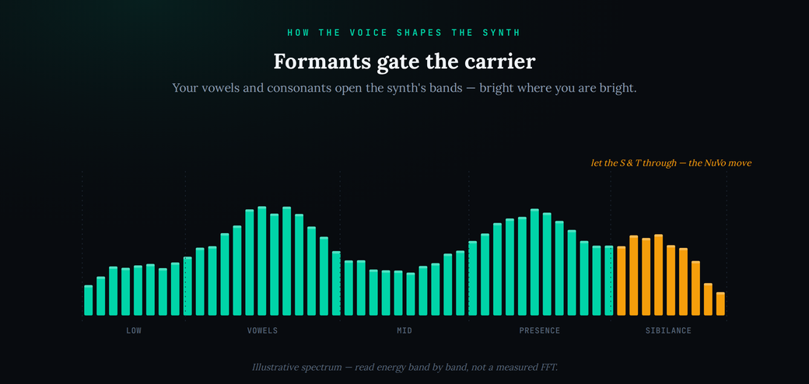

It is one of the most recognisable sounds in modern music: the gleaming, metallic, perfectly-articulated robot voice of Daft Punk — the “work it, make it, do it” of “Harder, Better, Faster, Stronger.” It is also one of the most misunderstood. Search for how it is made and you will be told, confidently and mostly incorrectly, that it is Auto-Tune, or “just a vocoder plugin,” or a talk box — usually with no distinction drawn between those very different things. The truth is more specific and far more useful: the signature voice is mostly a vocoder, and a particular one at that, the DigiTech Talker. Once you understand the mechanism — your voice reshaping a synth, note by note, consonant by consonant — you can rebuild the sound in any DAW you already own, with nothing rare and nothing to buy. This guide separates what is confirmed about Daft Punk’s gear from what the internet keeps repeating, then walks you through the recreation from a free stock vocoder first, naming the paid shortcut only because it is real.
Daft Punk’s robot voice is a vocoder, not Auto-Tune — mostly the DigiTech Talker, a digital vocoder pedal. A vocoder uses your voice as the modulator to reshape a bright synth carrier, so the synth appears to talk. To rebuild it in any DAW: hold a bright saw or square chord on a muted synth as the carrier, put a stock vocoder (Ableton Vocoder, Logic EVOC 20, or the free TAL-Vocoder) on your vocal, route the synth in as the carrier, then over-enunciate and let the sibilants through for intelligibility. That last step — passing the “S” and “T” sounds — is exactly what the Talker’s NuVo program did on “Harder, Better, Faster, Stronger.” A real talk box (“Around the World”-style) is the physical, mouth-performed alternative.
The signature robot voice is mostly the DigiTech Talker — a digital vocoder pedal that carries DigiTech’s name but was designed and built by IVL Technologies, and sold as a guitar pedal. “Harder, Better, Faster, Stronger” uses the Talker’s NuVo program, which lets sibilant sounds through for intelligibility; most other robot-voice tracks use its TalkBox program. In their own words — a May 2001 Remix interview — Daft Punk said “every one of our vocal tracks uses a different vocoder effect,” naming an old Roland SVC-350, Auto-Tune, and a DigiTech Vocalist (a harmoniser, distinct from the Talker). And “One More Time” is Auto-Tune plus a phaser — a different, smoother sound — not the vocoder. Sources: Bjango, “The vocal effects of Daft Punk”; MusicTech on Bjango’s Robot Rocket; the May 2001 Remix interview quoted therein; Equipboard/Reverb listings for the Talker.
Two things. First, that the voice is “just Auto-Tune” or “a generic vocoder plugin” — naming one effect for everything is the myth; the robotic talking-synth voice is a specific vocoder, not pitch-correction. Second, the mechanism of “Around the World” is genuinely contested: some analysts call it “almost certainly a talk box,” while others reconstruct it as a square-wave vocoder. Treat “Around the World = talk box” as a strong-but-unsettled claim, not a fact, and do not state a specific carrier synth for it as gospel. Sources: Bjango (talk box “almost certainly”) and Attack Magazine’s talk-box tutorial vs. Vochlea/Dubler, which model it as a square-wave vocoder; the recurring Gearspace/KVR threads.
The exact per-track signal chains and the carrier synths and settings. Beyond the gear Daft Punk named themselves, the specific routing on any given song has been reverse-engineered by fans and never fully documented. Any “this exact synth on that exact line” claim — including a particular saw carrier for “Around the World” — should be read as a modeled estimate, not a confirmed patch. Source: fan reconstructions across Gearspace and KVR; no primary settings sheet exists.
It isn’t Auto-Tune — and it isn’t “a vocoder plugin”
The single most common mistake is naming one effect for the whole catalogue. People hear anything robotic from Daft Punk and reach for the word that is nearest to hand — usually “Auto-Tune” — and stop there. But Daft Punk themselves said every vocal track used a different effect, and the sounds people lump together are produced by three completely separate technologies: talk boxes, vocoders, and harmonisers. They all sound vaguely robotic and you could be forgiven for confusing them, yet they work in totally different ways, and if you chase the wrong one you will never land the sound.
Start with what the robot voice is not. It is not pitch-correction. Auto-Tune and Melodyne take a real sung note and snap or glide its pitch onto a target; pushed hard, that produces the glassy “Cher effect” you hear on “One More Time,” which is Auto-Tune paired with a phaser. That is a genuinely different sound from the “work it, make it” robot — clearer and smoother, without the metallic, banded, talking-synth character. If you want to understand the pitch-correction family on its own terms, the Auto-Tune vs Melodyne breakdown and our guide to using Auto-Tune creatively are the right places; just know that neither is the mechanism behind the “Harder, Better, Faster, Stronger” voice.
The robot voice is a vocoder effect. And “a vocoder plugin” is closer, but still too vague to be useful, because vocoders vary enormously and the specific one Daft Punk leaned on — the DigiTech Talker — has a particular, gritty, intelligible character that a generic band-vocoder does not automatically give you. Getting the sound is less about owning a magic box and more about understanding the mechanism, then serving it well. That is what the rest of this guide is about, and it is why we treat this as a vocal-effects problem, not a plugin-shopping problem.
You can also learn to tell the three technologies apart by ear, which is the fastest way to stop chasing the wrong effect. A harmoniser like the DigiTech Vocalist keeps your natural voice recognisably human and simply adds tuned copies above and below it — think stacked robotic backing vocals rather than a talking machine. Auto-Tune keeps a single voice but glues its pitch to a grid, giving that glassy, sliding, in-tune-to-a-fault quality. A vocoder is the one that stops sounding like a person at all: the timbre is the synth’s, the notes are the synth’s, and only the shape of the words is yours. If you hear a clearly synthetic tone carrying intelligible speech on chosen chords, that is a vocoder, and that is the Daft Punk robot. Once you can name it, you know which door to walk through.
A one-minute history: where the robot voice came from
The vocoder was not invented for music at all. Homer Dudley built the first one at Bell Labs in the 1930s as a way to compress speech for transmission down telephone lines — the “voice coder” that gives the effect its name analysed a voice into a few control signals and rebuilt it at the far end. It escaped into music slowly: Wendy Carlos used one on the A Clockwork Orange score, Kraftwerk turned it into an identity on Autobahn and The Man-Machine, and by the time Zapp’s Roger Troutman was bending a talk box around a Minimoog, the “robotic funk vocal” was a fixture. Daft Punk inherited all of that and pushed it back into the pop mainstream. Knowing the lineage is genuinely useful, because it tells you the sound was always about intelligible machine speech — the whole history is a chase for words that a listener can understand coming out of a circuit, which is exactly the problem the NuVo trick solves.
Two machines that sound alike: the vocoder and the talk box
To recreate the sound, you have to hold two mechanisms in your head at once, because Daft Punk used both across their catalogue and they are constantly confused. Get the mechanism right and the recreation almost designs itself.
A vocoder is an electronic effect with two inputs. One is the modulator — your voice. The other is the carrier — a synth, usually something bright like a harmonically-rich saw. The vocoder analyses the moment-to-moment frequency shape of your voice and imposes that shape onto the carrier, band by band, so the synth appears to speak or sing your words. The voice gives the shape; the synth gives the tone and the notes. This is why a vocoder’s pitch comes from the synth you play, not from how high you sing — you can whisper the words and the “melody” is whatever chord the carrier holds. The vocoder is the workhorse behind most of Daft Punk’s robotic vocals, and it is what a stock DAW vocoder gives you.
A talk box reaches the same destination by a completely different road. There is no band analysis and no electronic modulator. Instead, a small speaker in a box pushes the synth signal up a clear plastic tube that runs into the performer’s mouth. The performer then shapes that sound acoustically — with lips, tongue and jaw — exactly as they would shape ordinary speech, while a microphone in front of the mouth captures the result. It is a performance instrument: the “filter” is a real human vocal tract, moved in real time. Roger Troutman of Zapp made it famous with synths; Peter Frampton made it famous with guitar. If “Around the World” is a talk box — and reputable analysts think it very likely is, though others reconstruct it as a vocoder — that is the mechanism at work.
Here is the crucial practical point: the two sound similar and robotic, but they demand different things from you. A vocoder is a routing-and-mixing job you do at the desk, repeatable and edit-friendly. A talk box is a physical skill you perform, closer to playing an instrument than to loading a plugin. For a recreation aimed at a finished record, the vocoder route is where almost everyone should start, and it is what we build first.
It also helps to know that not all vocoders are built the same way, because that difference is audible. The classic design splits the voice into a bank of bandpass filters — often eight, sixteen, or more — measures the level in each band, and applies those levels to the same bands on the carrier. More bands means finer detail and clearer speech; fewer bands means the lo-fi, “80s” vocoder sound. The DigiTech Talker took a different route entirely: it uses linear predictive coding, the speech-modelling maths that phone systems and early speech chips used, which is why it sounds grittier and more “spoken” than a smooth analogue band-vocoder. You do not need LPC to get close — a stock band-vocoder with enough bands is plenty — but knowing the Talker is an LPC device explains why it has that particular chewy, intelligible edge, and why a plugin like Robot Rocket that also uses LPC gets nearer than a generic one.
What Daft Punk actually used
Because so much of the internet guesses, it is worth being precise about the confirmed layer. In that 2001 Remix interview, Daft Punk named three of their own vocal tools: an old Roland SVC-350 vocoder, Auto-Tune, and a DigiTech Vocalist. Note that the Vocalist is a pitch-shifting harmoniser — it is not the same box as the Talker, and mixing the two names up is a frequent error. That interview covered only their first two albums and, tellingly, did not mention a talk box despite “Around the World” almost certainly using one, or the DigiTech Talker that later analysis places all over Discovery and Human After All.
The DigiTech Talker is the box most responsible for the sound people mean when they say “the Daft Punk robot voice.” It is a digital vocoder pedal — carrying DigiTech’s branding but engineered by IVL Technologies, a company that specialised in vocal processing and later became part of TC-Helicon. Rather than the classic bank of bandpass filters, the Talker uses linear predictive coding (LPC), the same speech-modelling maths behind a lot of voice technology, which is a big part of why it sounds gritty and intelligible rather than smooth and glassy. Crucially for the recreation, the Talker offers named programs, two of which matter: TalkBox, the lo-fi program you have probably heard the most, and NuVo, which passes sibilant sounds through so words stay readable. “Harder, Better, Faster, Stronger” uses NuVo — and that single design choice, letting the consonants through, is most of why that vocal is so unusually clear.
Vocoders are bad at unvoiced consonants — the “S”, “F” and “T” sounds that have no pitch. The Talker’s NuVo program fixed that by letting a little of the real voice or noise through on those sounds. Reproduce that behaviour in your DAW and vocoded gibberish turns into a robot that actually talks.
The Talker’s pedigree is worth a sentence because it explains the sound. IVL Technologies, the Canadian firm that actually engineered it, specialised in voice processing and later merged into TC-Helicon — the same lineage behind a lot of respected vocal hardware. That heritage is why the Talker is unusually good at keeping words legible for a device sold to guitarists. The Roland SVC-350 that Daft Punk also named is a different flavour again: a classic rack vocoder with the lush, wide, distinctly analogue voice you hear on a lot of their smoother robotic passages. And the DigiTech Vocalist from that same interview is not a vocoder at all — it is a pitch-tracking harmoniser, the tool behind the stacked, tuned backing-vocal robots rather than the talking lead. Keeping those three straight is most of what separates an accurate recreation from a guess.
The one place to stay honest is “Around the World.” Its vocal is frequently held up as the definitive talk-box example, and respected analysis calls it “almost certainly” a talk box — but other careful reconstructions rebuild it convincingly as a square-wave vocoder, and the exact carrier has never been documented. Both routes can get you a faithful version, which is the practical takeaway; just resist any source that states the mechanism, or a specific synth, as settled fact. That uncertainty is exactly why our sourcing box above files it under “disputed” rather than “confirmed.”
It is worth dwelling on why “Harder, Better, Faster, Stronger” became the reference for this sound rather than any other vocoded track. Most vocoders, faced with a lyric, turn the consonants to mush — the very sounds that carry meaning are the ones with no pitch for the effect to grab. The Talker’s NuVo program was an unusually clever answer: instead of vocoding everything, it detects the unvoiced moments and lets the real voice or a burst of noise through on them, so the “s” in “faster” and the “t” in “better” survive. The result is a robot that is fully synthetic in tone yet almost perfectly legible — a combination that was rare before and is the entire reason the hook lodges in your head. When you rebuild the sound, that single behaviour is the highest-leverage thing to copy; get the consonants through and you are most of the way to the record, regardless of which vocoder you own.
Understanding the signal flow is easier as a picture than as a paragraph. Below, the vocoder path (your voice modulating a bright synth carrier) sits next to the talk-box path (a synth driven up a tube into your mouth), so you can see why they land in the same place from opposite directions.
![A signal-path diagram titled “The robot voice as a signal path.” A source jack labelled THE ROBOT VOICE fans out by cable to three cards. The teal card, “The vocoder route,” reads “your voice reshapes a bright synth” and routes to “most tracks.” The purple card, “The talk-box route,” reads “synth up a tube, shaped in your mouth” and routes to “Around the World?” The amber card, “Either mechanism,” reads “the synth owns the notes, you own the words” and routes to “robot voice.” Caption: the synth carries the pitch and your performance carries the words.](../images/how-to-recreate-the-daft-punk-robot-voice-signal-m.png)
How your voice shapes the synth
The heart of the vocoder — and the thing that tells you how to perform for it — is that your voice’s changing formants are what carve the synth into words. When you say “ah” versus “ee,” your vocal tract emphasises different frequency regions; the vocoder measures those regions many times a second and opens the matching bands on the carrier. So the synth is loud only where your voice is loud, in frequency. That is the whole trick, and it has direct consequences for how you sing into one.
First, the carrier must be bright and full-band. A vocoder can only pass frequencies that already exist in the carrier — it filters, it does not add. Feed it a dull sine and there is nothing for the high formants to reveal; feed it a bright saw, a square, or a layered stack and the consonants and airy vowels have something to bite into. Second, the carrier supplies the notes: hold a chord or a drone and your words ride that harmony; change the chord and the “melody” of the robot changes, regardless of your own pitch. Third, and most important for intelligibility, consonants are a performance problem. Over-enunciate. Push the “t” and the “k,” hiss the “s,” and where the vocoder still swallows a sibilant, blend a touch of the dry voice or a little noise back in on that syllable — the NuVo move.
The diagram below shows this as a spectrum: the voice’s formant peaks (the shape of the word) gating the carrier’s bands, so the output is bright where the voice is bright and dark where it is not.
A little EQ discipline on the carrier goes a long way here. Because the vocoder can only pass what the carrier contains, it pays to make sure the carrier is not just bright but evenly bright — a saw with a gentle high shelf gives the sibilant region something to reveal, while a carrier that is scooped in the presence range will sound muffled no matter how clearly you enunciate. If your DAW’s vocoder lets you set the number of bands, treat it as a legibility-versus-vintage dial: raise it when you need the lyric understood, lower it when you want the effect to feel more like a machine and less like a person. And remember the carrier can be more than one oscillator — a layered pair of a bright saw and a square, or a full detuned stack, gives the robot a thicker, more modern body while still leaving the formants room to carve words.
Two more performance choices shape how human-or-machine the result reads. The first is the vocoder’s band count, if it is adjustable: sixteen or more bands renders speech crisply and modern, while eight or fewer gives the vintage, blocky, unmistakably-vocoded sound of the 70s and 80s records. The second is your own register. Because the vocoder reads the shape of your speech and not its pitch, you can talk rather than sing and let the carrier supply every note — which is why so many vocoded parts are performed almost deadpan. If you want the robot to feel colder and more mechanical, flatten your delivery; if you want it warmer, let a little natural inflection through. None of this touches a plugin parameter; it is all in the take.

Recreate it: stock vocoder first, then the shortcut
You almost certainly already own everything you need. Nearly every DAW ships a competent vocoder — Ableton has Vocoder, Logic has EVOC 20, and for anything without one the free TAL-Vocoder is excellent. The synth can be anything bright; the free Vital or any stock synth in your DAW is more than enough for the carrier. Here is the full recreation, stock-first.
| Step | What to do | Why it matters |
|---|---|---|
| Carrier synth | Bright saw/square, held chord, track muted | The vocoder filters this; dull carrier = dull robot. Muted so you only hear the vocoded result. |
| Vocoder | On the vocal; carrier input = the synth track | Your voice is the modulator, the synth the carrier. This routing is the whole effect. |
| Bands | More bands = more intelligible | Few bands sound lo-fi and vintage; many bands read words more clearly. |
| Sibilance | Blend dry voice/noise on S, T, F | The NuVo move — unvoiced consonants have no pitch, so pass them through. |
| Tone | Highpass lows, keep top bright, light drive | Clears mud, keeps the metallic sheen, adds the gritty Talker character. |
| Notes | Carrier chord = your song’s key | The robot’s “melody” is the carrier, not your voice. |
Perform the take like you mean it. Vocoded vocals live or die on enunciation, so record a clear, close, dry take — the same discipline you would bring to any vocal that has to sit forward in a mix — and do not be afraid to sound theatrical. Then chase the tone: a highpass to clear the low mud, brightness up top, and a little saturation for that hardware grit. If you want the honest paid shortcut, Bjango’s Robot Rocket is a plugin built specifically to model the DigiTech Talker — same LPC approach, with its TalkBox and NuVo programs on tap — and it runs around $39 (often on sale near $29) as a VST3 and AU. It is the closest you will get to the Talker without hunting down the hardware.
The routing is the one place people get stuck, and it differs slightly by DAW. In Ableton, drop Vocoder on the vocal, set its Carrier to “External,” and point the audio-from menu at your muted synth track — the synth feeds the vocoder even while its own output is silenced. In Logic, the EVOC 20 works from a side-chain: place it on the vocal and select the synth track as the side-chain source. The free TAL-Vocoder takes the voice as audio and the notes as MIDI, so you play the carrier chords straight into the plugin. The principle is identical everywhere — voice in as modulator, synth in as carrier — only the menu names change. Once it is wired, everything else is performance and tone.
If it is specifically the “Around the World” talk-box character you want, and you are willing to perform it, the hardware route is real and cheap enough to try: a self-contained talk box such as a Rocktron Banshee or a Heil Talk Box feeds a synth up a tube into your mouth, and you shape the words with your lips while a mic captures them. It takes practice — it is a physical skill, not a preset — but nothing digital fully replaces the way a real mouth articulates a tube, and for that particular sound it is the authentic path.
Whichever route you take, the finishing chain is what sells it. After the vocoder, a gentle highpass clears the boxy low end that stacked carriers pile up; a touch of saturation or bit-crushing adds the gritty, hardware-converter edge that a clean plugin lacks; and a high shelf keeps the top metallic and present so the words cut. A short, bright reverb or a slap delay places the robot in a space without smearing the consonants. Keep it restrained — the effect is already dramatic, and the most common way a good vocoder take goes wrong at the mix is over-processing that buries the very intelligibility you worked to win. Compress lightly, ride the level so every line reads, and let the sound’s inherent character do the rest.
Which route is right depends on what you are after, so the router below maps the want to the tool — and it is deliberately honest about the one option you should not treat as buyable.
![A signal-path decision diagram titled “The recreation as a signal path.” A source jack labelled WHAT YOU WANT fans by cable to three cards. Teal, “Want it free and stock?” — Ableton Vocoder, Logic EVOC 20 or TAL — routes to “DAW vocoder.” Purple, “Want a Talker model?” — an LPC plugin with TalkBox and NuVo programs — routes to “Robot Rocket, about thirty-nine dollars.” Amber, “Want the real hardware?” — discontinued and rare, not a new buy — routes to “Talker, about three hundred dollars and up.” Caption notes the talk-box route uses a hardware talk box such as a Rocktron Banshee or Heil.](../images/how-to-recreate-the-daft-punk-robot-voice-route-m.png)
Beyond Daft Punk: the same move anywhere
The reason this technique is worth learning properly is that it is not a one-song trick. Once you can route a voice and a carrier into a vocoder and perform for intelligibility, you own a whole family of sounds. Kraftwerk, Zapp, ELO, Herbie Hancock’s “Rockit,” countless hip-hop hooks, and most modern robotic ad-libs are the same mechanism with different carriers and different performances. Swap the saw carrier for a pad and you get a lush, choir-like robot; feed it a drum loop instead of a synth and you get rhythmic, pitched talking; push the drive and reduce the bands and you get the crunchy, lo-fi TalkBox-program grit.
The most creative move is to stop thinking of the carrier as “a synth” at all. Any bright, sustained source works: a shimmering pad turns a lyric into a ghostly chorus; white noise as the carrier gives the whispered, breathy robot that the Talker’s TazMania program was built for; and a busy drum or percussion loop as the carrier produces the rhythmic, chattering vocoded texture that fills modern electronic drops. Because the carrier owns the pitch and rhythm and your voice owns the words, changing the carrier is the single most powerful creative lever you have — the same vocal take can become a pad choir, a robotic lead, or a percussive stutter without you re-recording a syllable.
The last piece is arrangement, because a robot voice is a strong flavour and it works best when the track makes room for it. Daft Punk almost always give the vocoded hook its own clear space — a repeated phrase, a simple chord bed, and few competing midrange elements — so the ear can lock onto the words. When you drop a vocoder into a busy mix it tends to disappear into the synths, precisely because it is a synth wearing your words. Carve a pocket for it: thin the pads underneath, mute clashing leads while it speaks, and let its carrier chords double as the song’s harmony rather than fighting a separate chord part. Treated as a feature rather than a garnish, it becomes a hook; buried as an afterthought, it becomes mud.
It also pairs naturally with the other recreations in this series. The bright, detuned carriers that make a vocoder shimmer are exactly the sounds covered in how to recreate the supersaw, and the same “understand the real mechanism before you reach for a preset” discipline runs through recreating the 80s gated-reverb snare. If you are still building a synth vocabulary, our primer on what a synthesizer is and the roundup of the best synth plugins will make choosing a carrier second nature.
What you can’t perfectly clone — and why it doesn’t matter
Two things about the original are genuinely out of reach, and it is worth naming them honestly. The first is the exact voicing of the DigiTech Talker chip — its particular LPC grit, the specific way it mangles and reconstitutes a voice. Robot Rocket gets impressively close because it models that behaviour directly, but a generic band-vocoder will always sound a little cleaner and less characterful. The second, if you are chasing the “Around the World” sound specifically, is the physical talk-box performance: the tiny, human, real-time articulations of a mouth shaping a tube. A plugin cannot fully replace that, because it is not really an effect — it is a performance on an instrument.
Here is why neither matters for a finished record. The perceptual result — a bright, banded, intelligible robot voice reading your lyrics on the notes you choose — is completely reachable in a stock vocoder. In a full mix, with a beat and other elements around it, the last few percent of chip-accurate grit is inaudible to essentially everyone. The character that listeners actually recognise comes from the things you fully control: a bright carrier, real enunciation, sibilants let through, and a metallic, slightly distorted tone. Nail those and you have the sound. Chase the exact chip and you are collecting, not producing.
This is the honest promise of the whole recreation approach: you are not trying to forge a fingerprint, you are trying to reproduce a result, and results live in perception. A blind listener cannot tell a well-made stock vocoder from a Talker inside a busy arrangement; they can, instantly, tell a mumbled take from a crisp one, or a dull carrier from a bright one. So spend your effort where the ear actually is — performance, carrier, and tone — and treat the rare hardware as a nice-to-have for the wall, not a requirement for the record.
Do you need to clear anything?
No. If you recorded your own voice and ran it through your own vocoder or talk box, the result is entirely your own production, and there is nothing to license or clear. Recreating an effect is not sampling a recording — a technique is not copyrightable, and reproducing a vocal-processing method has never required anyone’s permission. You can make a robot voice that sounds unmistakably Daft-Punk-adjacent and release it freely, the same way you can play a power chord that sounds like a thousand rock records.
The only place a rights question would ever arise is if you took the opposite route and sampled an actual Daft Punk recording — lifting a snippet of their vocal from the master. That is a different task entirely, and it would be a clearance matter, not a recreation. But that is not what any part of this guide involves: everything here starts from your voice and your synth, which keeps the whole thing clean.
Build the skill: 3 drills
- Load a stock vocoder on a vocal track and a bright saw synth on a second, muted track.
- Set the vocoder’s carrier input to the synth track and hold a single low chord.
- Say one clear word — “robot” — and adjust bands until you can read it.
- Goal: get from “muffled buzz” to “legible word” using only band count and enunciation.
- Record a phrase heavy in “S” and “T” sounds (“best faster stronger”).
- Duplicate the dry vocal and gate it so only the consonants pass.
- Blend that consonant layer under the vocoded voice until words snap into focus.
- Goal: hear how intelligibility is a consonant problem, not a bands problem.
- Keep your vocoded take exactly as is.
- Rewrite only the carrier synth’s chords under it — try a minor progression.
- Notice the robot’s “melody” follows the synth, not your voice.
- Goal: internalise that the carrier owns the pitch and the voice owns the words.
The mistakes that make it sound wrong
Pitch-correction cannot make this sound. If you are automating retune speed and hearing glassy glides, you are building “One More Time,” not the robot. The talking-synth voice is a vocoder; start there.
A vocoder can only reveal frequencies the carrier already has. A sine or a soft pad gives the effect nothing to work with. Use a bright saw or square and the words appear.
Vocoders punish lazy enunciation. A close, dry, over-articulated performance is worth more than any plugin choice. Perform it like a robot news anchor.
If your robot sounds like buzzing vowels with the words smeared out, you skipped the sibilants. Let the “S” and “T” through — the NuVo move — and it starts to talk.
Frequently Asked Questions
Their signature robot voice is mostly the DigiTech Talker, a digital vocoder pedal designed and built by IVL Technologies and sold under DigiTech’s name as a guitar pedal. “Harder, Better, Faster, Stronger” uses the Talker’s NuVo program, which lets sibilant sounds through for intelligibility; other robot-voice tracks use its TalkBox program. In their own 2001 Remix interview, Daft Punk also named an old Roland SVC-350 vocoder, Auto-Tune, and a DigiTech Vocalist harmoniser. So it is not one box for everything, and it is not simply “Auto-Tune.”
No, that is the most common myth. Auto-Tune is a pitch-correction effect and it shows up on different Daft Punk tracks; “One More Time” is Auto-Tune combined with a phaser, which is a different, smoother sound. The robotic, metallic talking-synth voice on “Harder, Better, Faster, Stronger” is a vocoder — the DigiTech Talker — where your voice shapes a synth. Pitch-correction and vocoding are entirely different mechanisms.
A vocoder is an electronic effect: it analyses your voice (the modulator) and uses its changing frequency shape to filter a synth (the carrier), so the synth appears to sing. A talk box is a physical device: a small speaker pushes a synth signal up a plastic tube into your mouth, and you shape it acoustically with your lips and tongue while a mic picks up the result. They sound similar and robotic, but one is a plugin or pedal and the other is a real-time mouth performance.
Yes. Most DAWs ship a capable vocoder: Ableton has Vocoder, Logic has EVOC 20, and there is the free TAL-Vocoder for anything else. Feed it a bright saw or square carrier held as a chord, sing a clear take as the modulator, then chase intelligibility and a metallic tone. For a mix, a stock vocoder is perceptually more than close enough; you do not need the rare hardware.
Intelligibility is mostly a performance and a consonant problem. Over-enunciate, especially the consonants, because vocoders struggle with unvoiced sounds like “S”, “F” and “T” that have no clear pitch. Let those sibilants through by blending a little dry voice or unvoiced noise on them; this is precisely what the DigiTech Talker’s NuVo program did to make “Harder, Better, Faster, Stronger” so readable. More vocoder bands and a bright carrier also help.
A bright, harmonically rich source works best because the vocoder can only filter frequencies that are already there. A sawtooth held as a sustained chord or drone is the classic choice; a square or a supersaw-style stack also works. Keep it bright and full-band, hold notes so the voice always has something to shape, and match the carrier’s notes to your song’s key.
Bjango’s Robot Rocket is a plugin built specifically to model the Talker, using the same linear-predictive-coding approach and offering its TalkBox and NuVo programs. It is around $39 (often on sale near $29) as a VST3 and AU. The original DigiTech Talker hardware is long discontinued and now a rare, collectable pedal that sells used for roughly $300 and up, so treat it as a hardware curiosity rather than something to buy new.
No. If you recorded your own voice and processed it through your own vocoder or talk box, the result is entirely your own production and there is nothing to clear. Recreating an effect is not sampling a recording. A rights question would only arise if you sampled an actual Daft Punk record, which is a completely different task from recreating the technique.